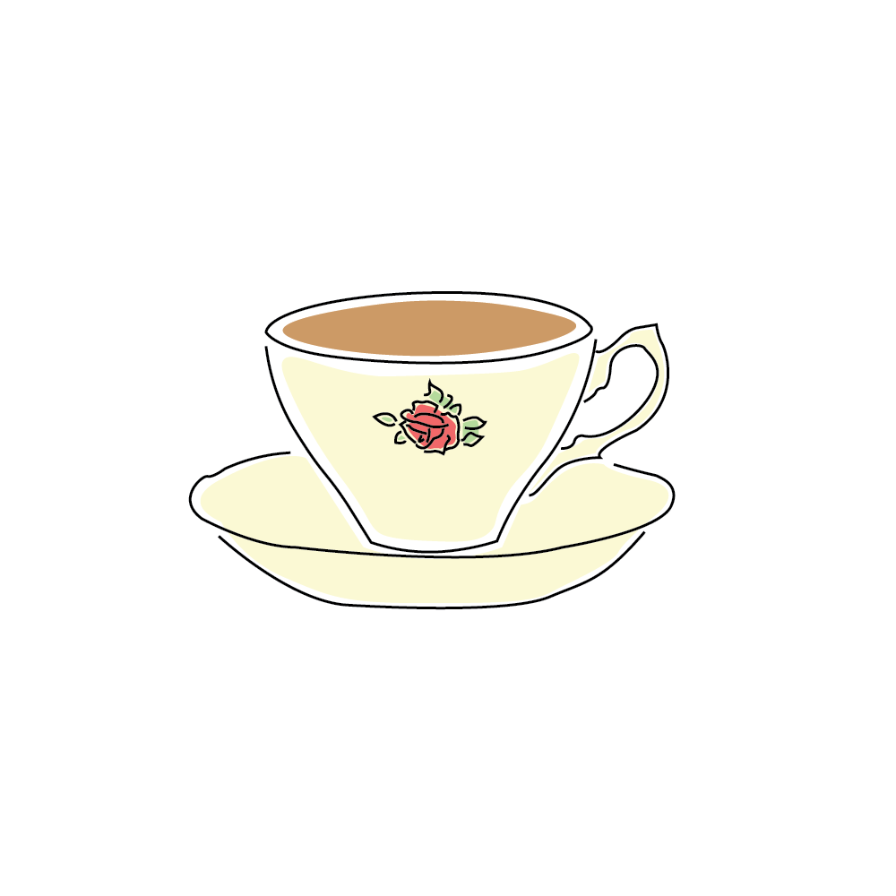
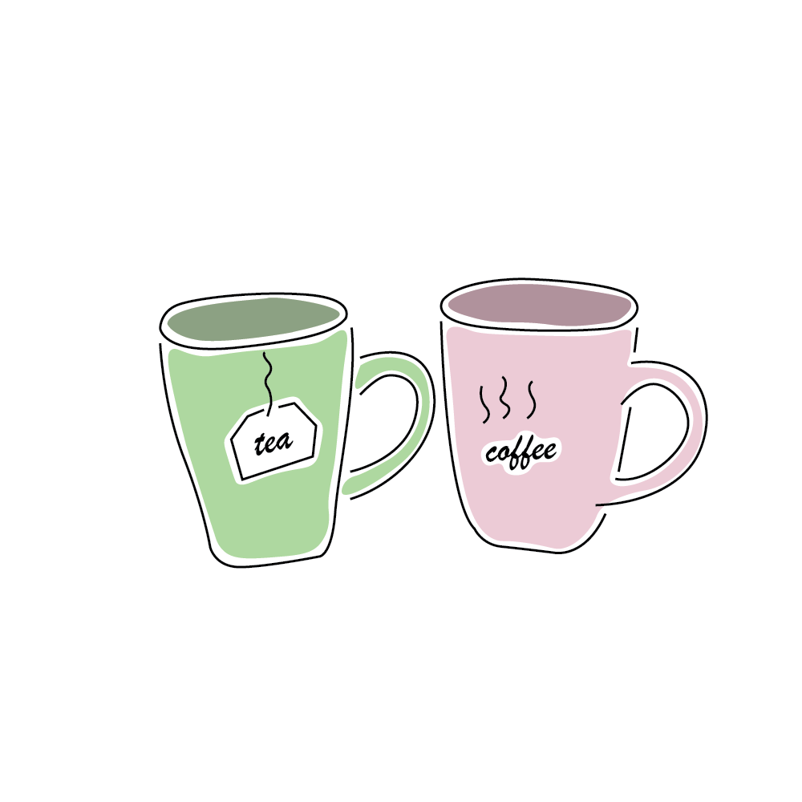
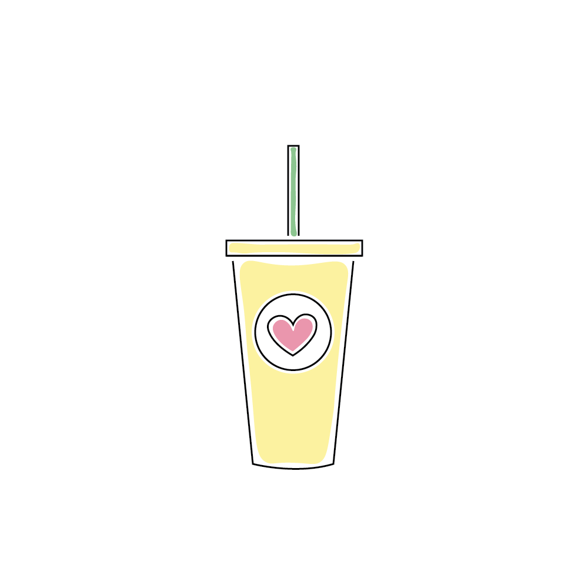
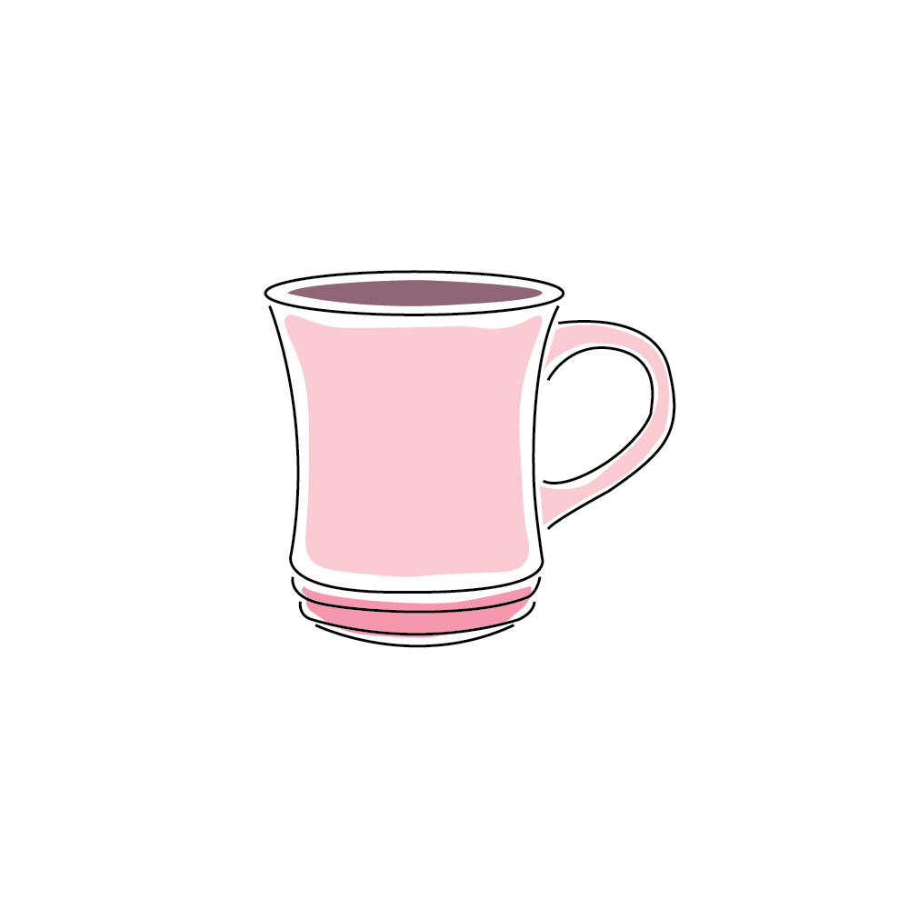
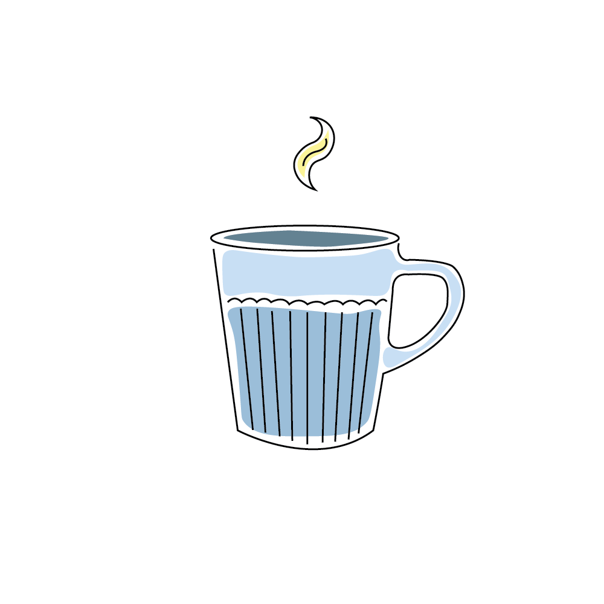
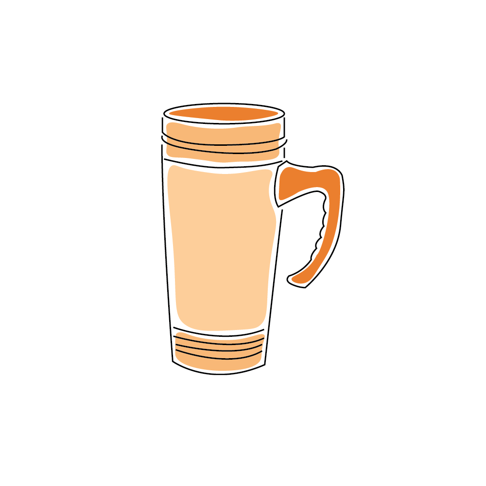
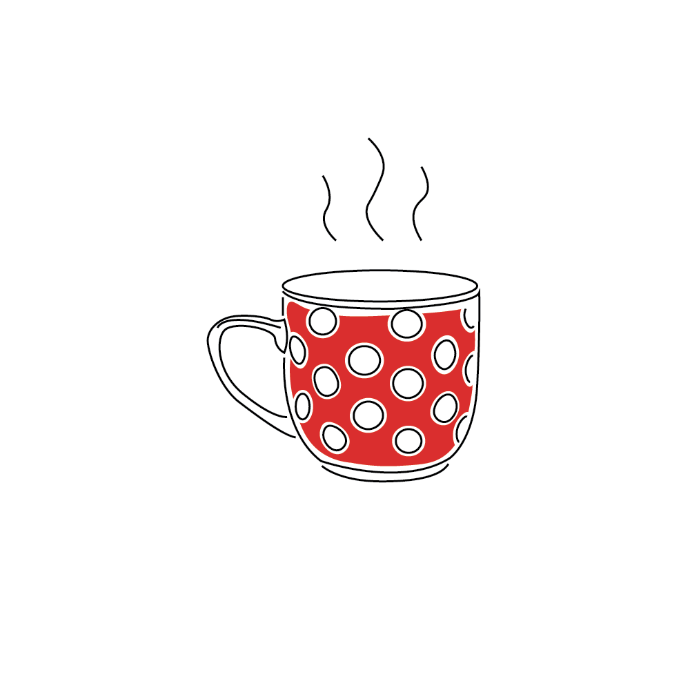
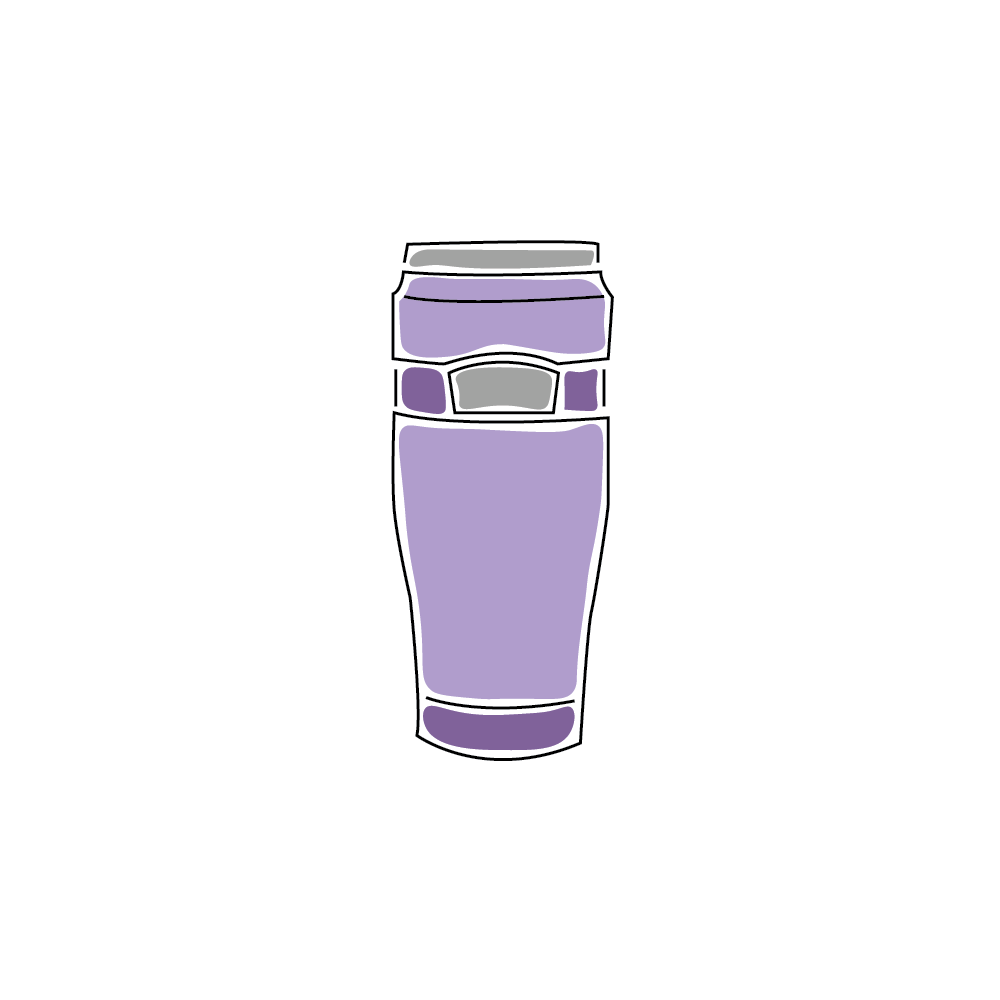
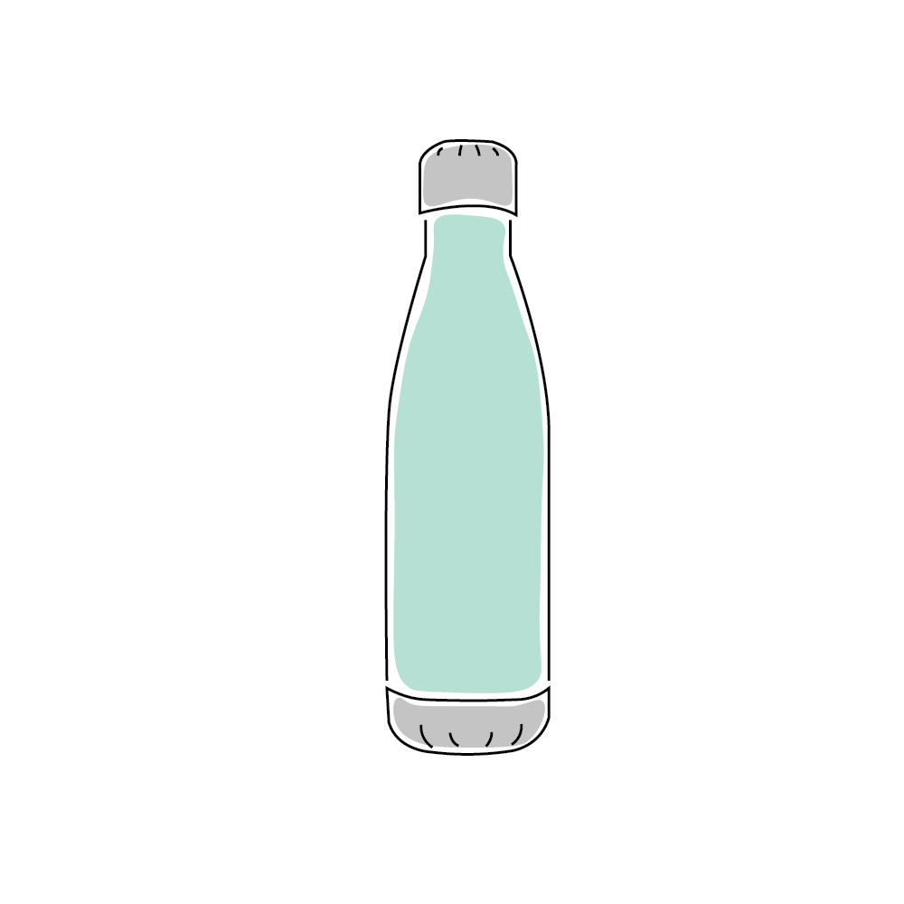
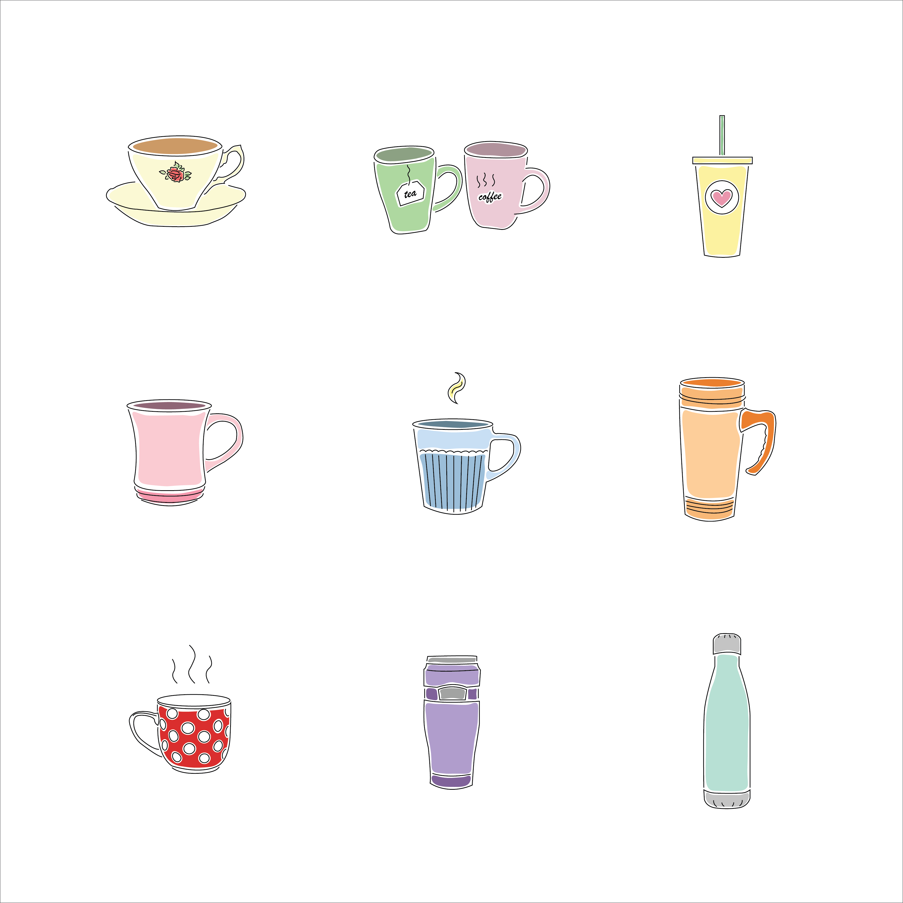

As the marketing assistant for campus dining services, I am given the opportunity to create graphics for events and campaigns across campus.
My favorite project that I have taken part in so far has been the Love-A-Mug campaign.
In an effort to promote sustainability, students and staff on the Princeton campus were encouraged to bring reusable mugs to any of our 8 campus cafés and fill them with coffee for a discounted price.
We realized that for many people, a mug is not simply a vessel for liquids, but also an object of sentimental value, often with everlasting memories and loved ones associated with it.
Thus, we wanted to give more meaning to the campaign by inviting participants to post pictures of their mugs with the hashtag #LoveAMug, sharing what their mug means to them.
I had so much fun scrolling through posts that were sometimes lighthearted and funny, and sometimes quite raw and vulnerable.
This program only ran for two weeks, but it is my hope that in the future, it becomes a lasting movement.
If Starbucks can do it, why can't we?
Here are some icons I created of (surprise!) mugs to be utilized in promotional material, both in print and online.
I wanted to give a playful, hand-drawn feel.









